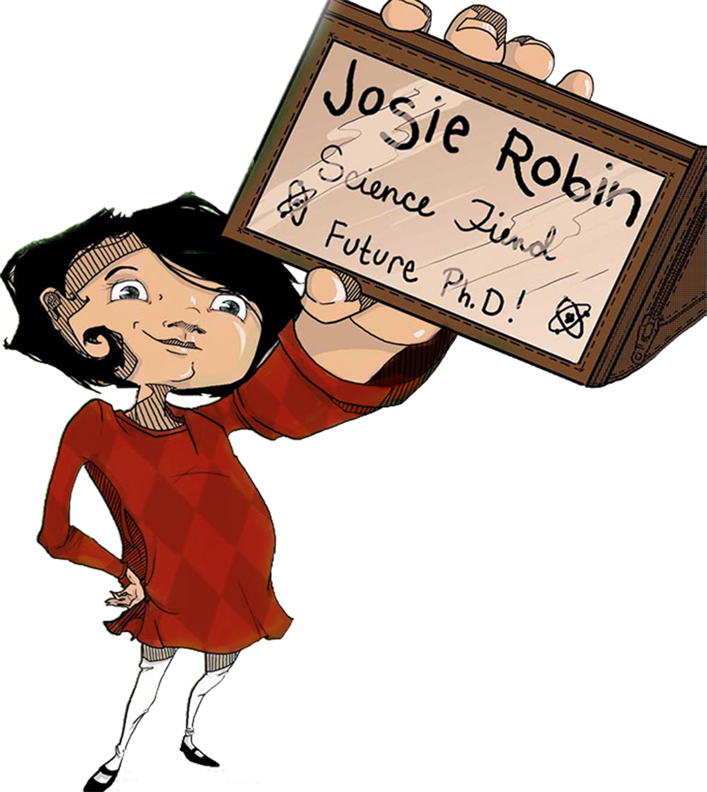

Adventure. Science. Fun

Stories to Empower
Future Scientists
Join Josie Robin on her fantastical adventures through larger-than-life science-scapes! This STEM inspired series brings science to life in fun and immersive ways.
Josie Robin's first adventure, A Fungus Among Us, is available now on iBooks.
The wonders of science.
The powers of a little girl.
All around us, there are fascinating things happening that we can’t even see. Plants are battling with other plants! The sun’s magnetic field is changing direction! Microscopic organisms are at war…inside our bodies! What if there was a place where all this science came to vivid and dramatic life…and we could see it? Well, this place exists, in the world of Josie Robin, Science Fiend. Josie Robin is the ultimate guide for kids to our amazing universe, a tireless host through the endlessly fascinating and adventure-filled world of science.